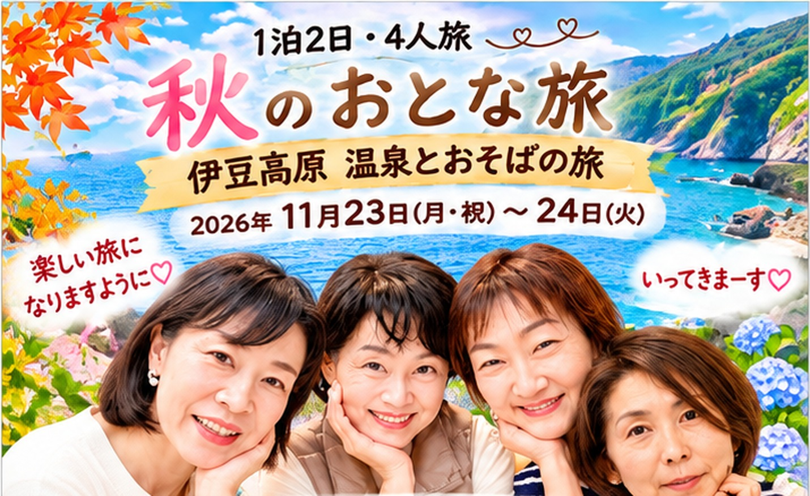
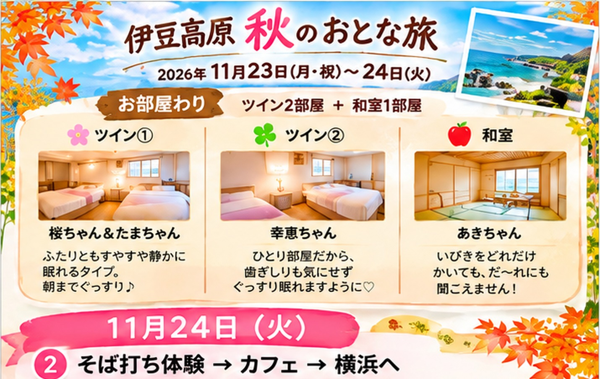

踊り子号 横浜駅6番線ホーム
8号車の乗車口
焼売弁当と缶チューハイを買ってから♪
特急 踊り子9号（伊東編成）指定席・チケットレス
💳 乗車券はSuicaで。往復5,064円引かれるので前もってチャージを！
8号車 12番・13番のA・B席。お弁当と乾杯で、わいわい移動♪
駅ビル「やまもプラザ」、歩いて4〜7分のセブン‑イレブン。ホテルのまわりはお店が少ないよ
ザ・グラン伊豆高原 内 伊東市富戸1317-14
大浴場・露天風呂温泉 15〜24時／朝6〜10時
お風呂 15:00〜24:00／朝 6:00〜10:00 お部屋でゴロゴロもよし♪
手打ちそばと海老の天ぷらが人気のお店
伊東市富戸1038-7 ☎0557-51-7280
席はカウンターかテーブル（当日のお店の状況による）
伊東市富戸1317-5760 ☎090-4706-9827
営業 12:00〜22:00（水・木休み）
買っておいた缶チューハイとおつまみで、だらだら楽しく♪

前の日に買ったパンやおにぎりで。朝の温泉は 6:00〜10:00
前の日に予約したタクシーで、そば打ち体験へ出発🚕
石臼でそばの実をひくところから体験！打ったおそばは天ぷらと一緒にその場で♪
伊東市八幡野1666-4（伊豆高原体験の里の中）
☎0557-54-3006
右の「カフェ候補」から気分で選んでね
15:15ごろにはお店を出て駅へ
帰りのきっぷはあきちゃんが買ってくれたよ🎫
15:40ごろにはホームへ
座席 号車 横浜着 ：
※移動時間は「めやす」です。当日は地図アプリでも確認してね